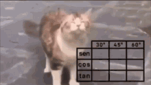

Profesor de Programación
Clases de programación inicial y acompañamiento en el apredizaje de distintos lenguajes.
Clases de programación inicial y acompañamiento en el apredizaje de distintos lenguajes.

Me dedico al armado de computadoras, montando los distintos componentes según las necesidades de cada equipo
Clases orientadas a electrónica básica y proyectos con microcontroladores.

Apoyo en contenidos relacionados con arquitectura, memoria, memoria cache programacion en bajo nivel y funcionamineto interno de computadoras.

Acompañamiento en materias relacionadas con la matemática para estudiantes de nivel secundario y universitario.